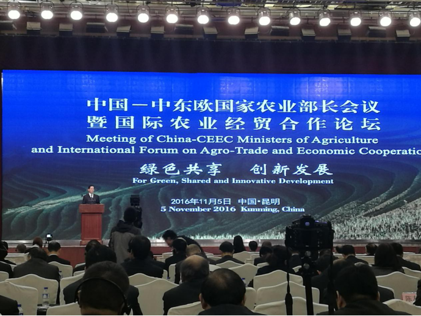
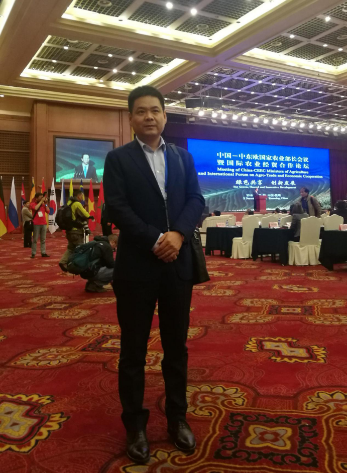

郑得厚总经理参加中国—中东欧国家农业部长会议暨国际农业经贸合作论坛
2017-01-08
11月5日，世纪联农（北京）农产品股份有限公司总经理郑得厚,参加中国—中东欧国家农业部长会议暨国际农业经贸合作论坛。

11月5日，中国—中东欧国家农业部长会议暨国际农业经贸合作论坛在昆明举行。国务院总理李克强致信祝贺。全国政协副主席罗富和、斯洛文尼亚第一副总理兼农林食品部部长戴扬·日丹出席并讲话。全国政协经济委副主任陈锡文，农业部部长韩长赋，云南省委书记、省长陈豪，省委副书记李秀领、省政协主席罗正富等出席论坛，以及来自中东欧16国的农业部长、国外驻华使领馆和企业界代表出席论坛。

本次会议以“创新与绿色发展，农业投资贸易合作新机遇”为主题，回应了国际社会对新时期农业发展的共同关注和期待，有助于中国同中东欧国家发挥互补优势，为促进区域和全球农产品贸易、农业投资及可持续发展注入新动力。并在会后，“16+1”农业部长（代表）们发表了《中国—中东欧国家农业部长会议昆明共同宣言》。